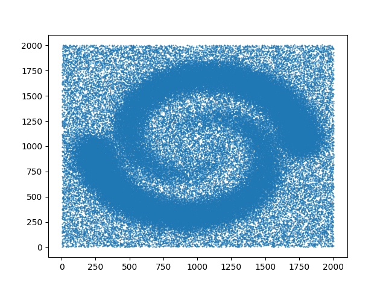

Datasets manual#
Datasets generators#
We provide the generation of different customizable datasets to use as inputs for Gudhi complexes and data structures.
Points generators#
The module points enables the generation of random points on a sphere, random points on a torus and as a grid.
Points on sphere#
The function sphere enables the generation of random i.i.d. points uniformly on a (d-1)-sphere in \(R^d\).
The user should provide the number of points to be generated on the sphere n_samples and the ambient dimension
ambient_dim.
The radius of sphere is optional and is equal to 1 by default.
Only random points generation is currently available.
The generated points are given as an array of shape \((n\_samples, ambient\_dim)\).
Example#
from gudhi.datasets.generators import points
from gudhi import AlphaComplex
# Generate 50 points on a sphere in R^2
gen_points = points.sphere(n_samples = 50, ambient_dim = 2, radius = 1, sample = "random")
# Create an alpha complex from the generated points
alpha_complex = AlphaComplex(points = gen_points)
- gudhi.datasets.generators.points.sphere(n_samples: int, ambient_dim: int, radius: float = 1.0, sample: str = 'random') numpy.ndarray[dtype=float64]#
Generate random i.i.d. points uniformly on a (d-1)-sphere in R^d
Note
For reproducible results, consider using set_seed().
Points on a flat torus#
You can also generate points on a torus.
Two functions are available and give the same output: the first one depends on CGAL and the second does not and consists of full python code.
On another hand, two sample types are provided: you can either generate i.i.d. points on a d-torus in \(R^{2d}\) randomly or on a grid.
First function: ctorus#
The user should provide the number of points to be generated on the torus n_samples, and the dimension
dim of the torus on which points would be generated in \(R^{2dim}\).
The sample argument is optional and is set to ‘random’ by default.
In this case, the returned generated points would be an array of shape \((n\_samples, 2*dim)\).
Otherwise, if set to ‘grid’, the points are generated on a grid and would be given as an array of shape:
Note
The output array first shape is rounded down to the closest perfect \(dim^{th}\) power.
Note
This version is recommended when the user wishes to use ‘grid’ as sample type, or ‘random’ with a relatively small number of samples (~ less than 150).
Note
For reproducible results, consider using set_seed().
Example#
from gudhi.datasets.generators import points
# Generate 50 points randomly on a torus in R^6
gen_points = points.ctorus(n_samples = 50, dim = 3)
# Generate 27 points on a torus as a grid in R^6
gen_points = points.ctorus(n_samples = 50, dim = 3, sample = 'grid')
- gudhi.datasets.generators.points.ctorus(n_samples: int, dim: int, sample: str = 'random') numpy.ndarray[dtype=float64]#
Generate random i.i.d. points on a d-torus in R^2d or as a grid
- Parameters:
- Returns:
the generated points on a torus.
The shape of returned numpy array is:
If sample is ‘random’: (n_samples, 2*dim).
If sample is ‘grid’: (⌊n_samples**(1./dim)⌋**dim, 2*dim), where shape[0] is rounded down to the closest perfect ‘dim’th power.
Second function: torus#
The user should provide the number of points to be generated on the torus n_samples and the dimension
dim of the torus on which points would be generated in \(R^{2dim}\).
The sample argument is optional and is set to ‘random’ by default.
The other allowed value of sample type is ‘grid’.
Note
This version is recommended when the user wishes to use ‘random’ as sample type with a great number of samples and a low dimension.
Note
For reproducible results, consider using import numpy as np; np.random.seed(42).
Example#
from gudhi.datasets.generators import points
# Generate 50 points randomly on a torus in R^6
gen_points = points.torus(n_samples = 50, dim = 3)
# Generate 27 points on a torus as a grid in R^6
gen_points = points.torus(n_samples = 50, dim = 3, sample = 'grid')
- gudhi.datasets.generators.points.torus(n_samples, dim, sample='random')[source]#
Generate points on a flat dim-torus in R^2dim either randomly or on a grid
- Parameters:
- Returns:
numpy array containing the generated points on a torus.
The shape of returned numpy array is:
If sample is ‘random’: (n_samples, 2*dim).
If sample is ‘grid’: (⌊n_samples**(1./dim)⌋**dim, 2*dim), where shape[0] is rounded down to the closest perfect ‘dim’th power.
Fetching datasets#
We provide some ready-to-use datasets that are not available by default when getting GUDHI, and need to be fetched explicitly.
By default, the fetched datasets directory is set to a folder named ‘gudhi_data’ in the user home folder. Alternatively, it can be set using the ‘GUDHI_DATA’ environment variable.
- gudhi.datasets.remote.fetch_bunny(file_path=None, accept_license=False)[source]#
Load the Stanford bunny dataset.
This dataset contains 35947 vertices.
Note that if the dataset already exists in the target location, it is not downloaded again, and the corresponding array is returned from cache.
- Parameters:
file_path¶ (string) –
Full path of the downloaded file including filename.
Default is None, meaning that it’s set to “data_home/points/bunny/bunny.npy”. In this case, the LICENSE file would be downloaded as “data_home/points/bunny/bunny.LICENSE”.
The “data_home” directory is set by default to “~/gudhi_data”, unless the ‘GUDHI_DATA’ environment variable is set.
accept_license¶ (boolean) –
Flag to specify if user accepts the file LICENSE and prevents from printing the corresponding license terms.
Default is False.
- Returns:
points – Array of shape (35947, 3).
- Return type:
numpy array
3D Stanford bunny with 35947 vertices.#
- gudhi.datasets.remote.fetch_spiral_2d(file_path=None)[source]#
Load the spiral_2d dataset.
Note that if the dataset already exists in the target location, it is not downloaded again, and the corresponding array is returned from cache.
- Parameters:
file_path¶ (string) –
Full path of the downloaded file including filename.
Default is None, meaning that it’s set to “data_home/points/spiral_2d/spiral_2d.npy”.
The “data_home” directory is set by default to “~/gudhi_data”, unless the ‘GUDHI_DATA’ environment variable is set.
- Returns:
points – Array of shape (114562, 2).
- Return type:
numpy array

2D spiral with 114562 vertices.#
- gudhi.datasets.remote.fetch_daily_activities(file_path=None, subset=None, accept_license=False)[source]#
Load a subset of the Daily and Sports Activities dataset. This dataset comes from https://archive.ics.uci.edu/ml/datasets/daily+and+sports+activities (CC BY 4.0 license).
Note that if the dataset already exists in the target location, it is not downloaded again, and the corresponding dataset is read from cache.
- Parameters:
file_path¶ (string) –
Full path of the downloaded file including filename.
Default is None, meaning that it’s set to “data_home/points/activities/activities_p1_left_leg.npy”. In this case, the LICENSE file would be downloaded as “data_home/points/activities/activities.LICENSE”.
The “data_home” directory is set by default to “~/gudhi_data”, unless the ‘GUDHI_DATA’ environment variable is set.
subset¶ (string) –
- This argument allows to download the following subsets:
’cross_training’ Only left leg magnetometer of cross training activity performed by the person 1. It contains 7.500 vertices in dimension 3.
’jumping’ Only left leg magnetometer of jumping activity performed by the person 1. It contains 7.500 vertices in dimension 3.
’stepper’ Only left leg magnetometer of stepper activity performed by the person 1. It contains 7.500 vertices in dimension 3.
’walking’ Only left leg magnetometer of walking activity performed by the person 1. It contains 7.500 vertices in dimension 3.
None (default value) This dataset contains 30.000 vertices in dimension 3 + activity type column (14. for ‘cross_training’, 18. for ‘jumping’, 13. for ‘stepper’, or 9. for ‘walking’)
accept_license¶ (boolean) –
Flag to specify if user accepts the file LICENSE and prevents from printing the corresponding license terms.
Default is False.
- Returns:
points –
- Depending on subset value:
Array of shape (7.500, 3, dtype = float).
- Or
Array of shape (30.000, 4, dtype = float) when subset is None.
- Return type:
numpy array
- gudhi.datasets.remote.clear_data_home(data_home=None)[source]#
Delete the data home cache directory and all its content.
- Parameters:
data_home¶ (string, default is None.) – The path to remote datasets directory. If None and the ‘GUDHI_DATA’ environment variable does not exist, the default directory to be removed is set to “~/gudhi_data”.